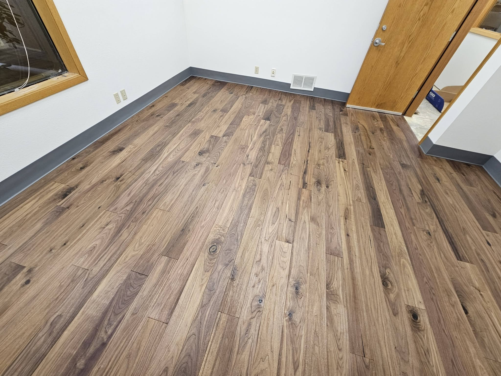

Owner-Installed Flooring & Custom Fencing—Zero Subcontractor Handoffs.
Direct owner-led residential & commercial flooring plus deep-set 6ft cedar, vinyl, and chain link fencing across Keizer, Salem, and Albany. Licensed, insured, and backed by transparent line-item bids.

Built to Outlast Wet Oregon Winters & Heavy Daily Foot Traffic.
Most contractors sub out your job to the lowest bidder and disappear when seams lift or posts lean. Jorey measures, preps, and installs every square foot himself.
Flooring Installation & Subfloor Prep
Clean layout, level subfloors, and crisp trim transitions for Keizer homeowners, rentals, and commercial offices.
- Luxury Vinyl Plank (LVP) & Laminate: Waterproof click-lock residential planks and heavy-traffic commercial glue-down LVP.
- Commercial Carpet Tile & Sheet Vinyl: Fast-turnaround office, retail, and multifamily flooring installations.
- Hardwood, Stair Nosing & Trim: Acclimated wood installs, flush reducers, and clean baseboard finishes.
- Flooring Repairs & Leveling: Damaged plank swaps, subfloor squeak fixes, and moisture-barrier prep.
Custom Fencing & Gate Builds
Deep-set concrete footings, laser-straight string lines, and durable framing built for Willamette Valley winters.
- 6ft Cap & Trim Cedar Fencing: Classic good-neighbor, dog-ear, and board-on-board Western Red Cedar runs.
- Low-Maintenance Vinyl Fencing: Weather-resistant privacy panels that never need painting or staining.
- Residential & Commercial Chain Link: Galvanized and black vinyl-coated perimeter fencing for yards & lots.
- Custom Gates & Storm Repairs: Reinforced steel-frame gates, post replacements, and wind-damage rebuilds.
Pick the Right Build for Your Budget, Foot Traffic & Lot
| Option | Best Application | Key Advantage |
|---|---|---|
| 6ft Cap & Trim Cedar Fence | Backyard privacy & residential property lines | Rich natural Northwest look with heavy-duty top cap stability |
| Vinyl Privacy Fence | Zero-upkeep residential yards & rentals | Never rots, warps, or needs restaining |
| Galvanized / Black Chain Link | Pet runs, acreage & commercial perimeters | Maximum durability and cost-effective linear footage |
| Click-Lock Waterproof LVP | Living rooms, kitchens, hallways & rentals | 100% waterproof surface with warm underfoot feel |
| Commercial Glue-Down LVP / Carpet Tile | Offices, retail storefronts & high-traffic suites | Handles rolling loads and fast single-tile replacement |
Real Homes & Commercial Suites Across the Mid-Willamette Valley

Commercial Walnut LVP & Cove Base
Commercial-grade walnut plank and crisp vinyl cove base made for heavy daily foot traffic and flush doorway transitions.

6ft Cap & Trim Cedar Fence
Custom 6-foot Western Red Cedar privacy run finished with crisp top cap and trim detailing built to stay plumb.

Open-Concept Waterproof LVP
Complete luxury vinyl plank installation with tight doorway cuts, moisture protection, and clean perimeter trim.
No Hidden Markups. No Ghosted Callbacks.
Are you licensed and insured for both flooring and fencing?
Yes. JPL Installations Construction Company has operated since 2017 and carries dedicated general contractor licensing and insurance covering residential & commercial flooring installations, custom fencing, and repairs.
Do you offer free on-site measurements and written bids?
Yes. Jorey walks your property in Keizer, Salem, Albany, or surrounding valley cities to measure exact square or linear footage and provides a clear written line-item quote before work begins.
Can you handle commercial flooring or fence storm repairs?
Yes—we install commercial glue-down LVP and carpet tile for offices and retail spaces, and we also handle targeted plank replacements, leaning fence posts, and gate rebuilds.
Get a Line-Item Written Bid Within 48 Hours of Your Walkthrough
Call or text (971) 382-2083 directly, or send your project details below.